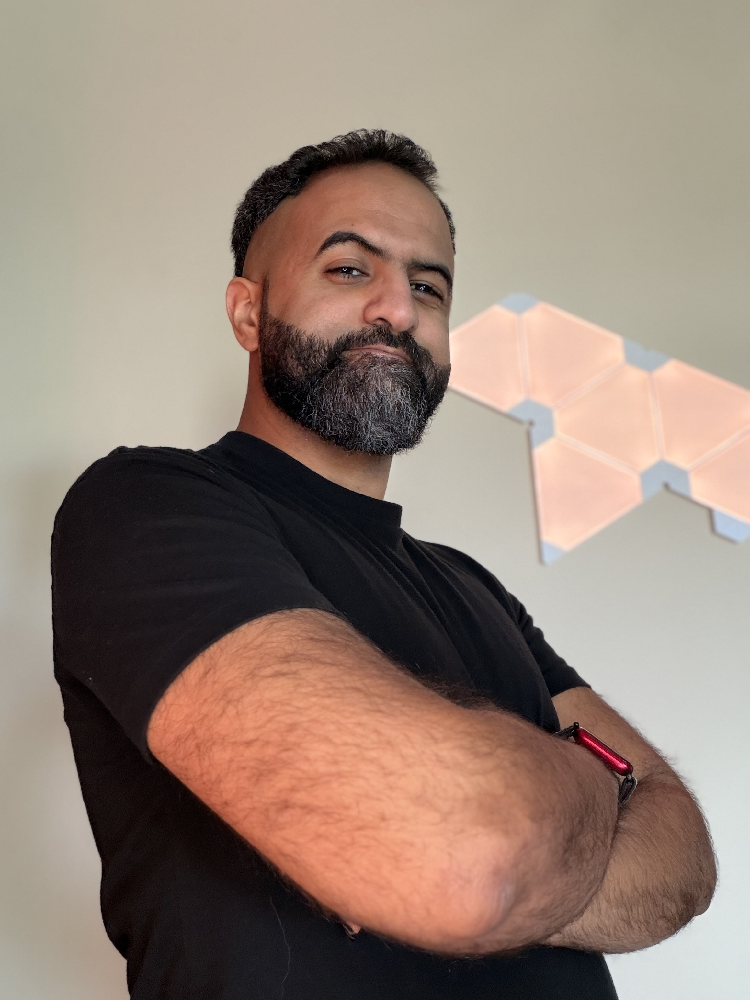

0
technical support cases handled
San Francisco-based • AI Workflows • IT Support • QA Testing
San Francisco–based IT support and QA professional with hands-on experience using AI tools, troubleshooting Apple hardware and software, validating releases, training teams, and communicating technical issues clearly.

0
technical support cases handled
0
customer satisfaction score
0
employees trained
0
support, QA, training, operations
About
I’m Ahmed AlOtaibi, a San Francisco–based IT support and QA professional with experience across Apple Retail, employee training, software validation, and hands-on technical troubleshooting.
I do my best work when I’m identifying issues, narrowing down root causes, documenting what matters, and helping teams or customers move forward without confusion. I like technical environments where careful testing, clear communication, and steady follow-through matter.
My background blends frontline troubleshooting with QA-style thinking: reproducing problems, validating behavior, spotting gaps, and explaining technical details in a way other people can act on.
What I bring
Experience
Troubleshot hardware, software, account, and device issues across Apple products and services in a high-volume retail environment, balancing technical diagnosis, customer education, and service expectations in real time.
Created and delivered training that improved technical readiness, onboarding consistency, and team confidence in customer-facing troubleshooting.
Executed test plans for Location Framework features, validated regressions, and documented defects clearly for engineering follow-up.
Led daily operations, inventory accuracy, vendor coordination, and team problem- solving in a high-responsibility retail environment.
Project
Updated an open-source iOS radio app to keep it working on newer Apple operating systems, which involved debugging compatibility issues, testing behavior across versions, and improving reliability for users.
Project
Built small API-connected tools and experiments to strengthen my skills in integration work, debugging, structured outputs, and turning technical ideas into working prototypes.
AI Workflow
I use AI agents and API-connected tools in daily life and work for planning, research, writing, troubleshooting, and task organization, with different systems supporting different needs depending on the context.
Beyond using the tools, I also maintain and improve these workflows by handling updates, resolving API-call issues, debugging technical problems, and improving reliability when integrations or agent behavior break down.
Skills
macOS support, hardware and software troubleshooting, bug reproduction, QA validation, technical documentation, SQL, JavaScript, Swift, XCTest, Jenkins, and API integration.
Contact
I’m looking for work where careful troubleshooting, clear documentation, QA discipline, and calm communication are part of the job.